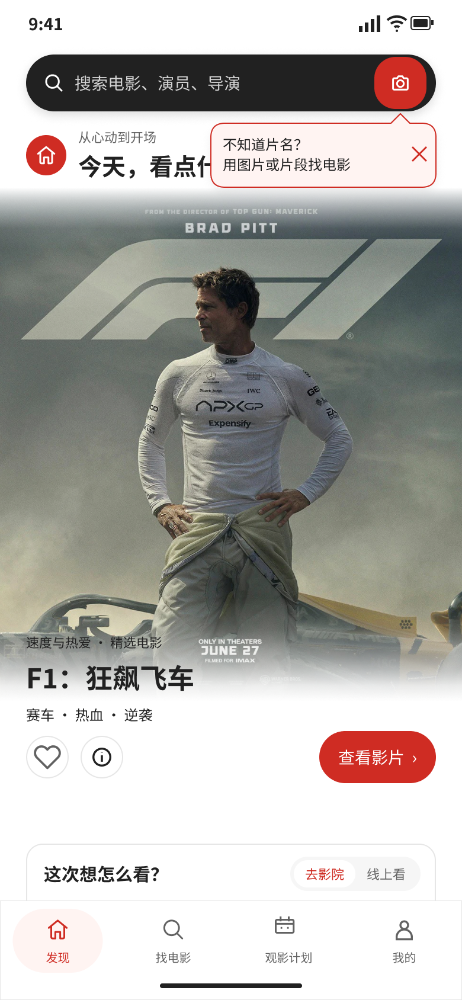
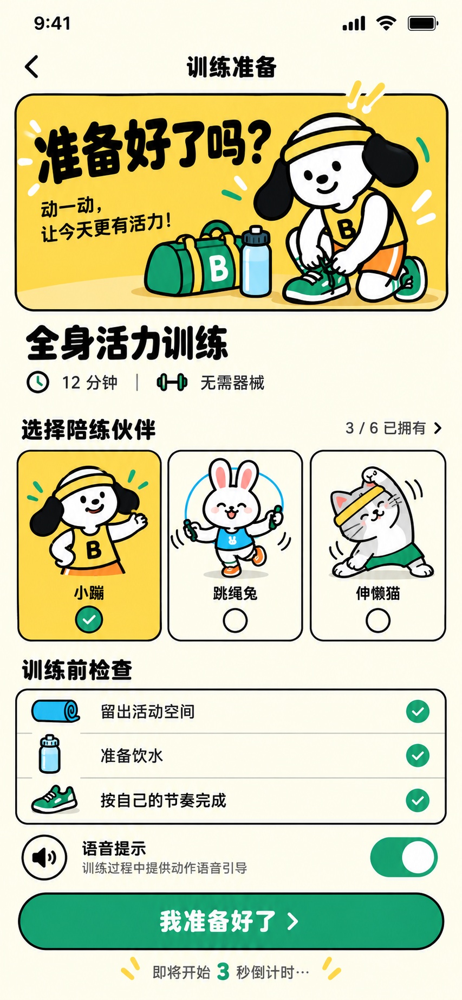

映遇
电影发现与观影规划
从片段找到电影，把想看的影片加入观影计划，再并排比较两组场次。让发现与安排观影衔接起来。
关于我
很高兴，在这里遇见你。
我关注产品设计里的界面与交互，喜欢把一个想法，慢慢做成可以看见、可以操作的体验。
从界面，到使用时的每一步。
从内容的层次和顺序开始，让人知道现在在哪、下一步去哪。
不只看单个页面，也看一次操作如何开始、继续和结束。
用恰好的状态与动效，让每一次点击都有清楚的回应。
最近的创作

电影发现与观影规划
从片段找到电影，把想看的影片加入观影计划，再并排比较两组场次。让发现与安排观影衔接起来。

游戏化的健身体验
把居家跟练和健身房布置连在一起。完成训练、领取奖励，再用获得的器材和装饰，慢慢搭建自己的健身房。